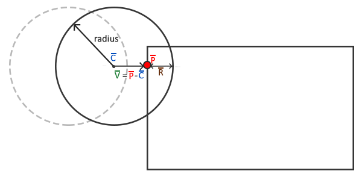

Collision resolution
In-Practice/2D-Game/Collisions/Collision-resolution
At the end of the last chapter we had a working collision detection system. However, the ball does not react in any way to the detected collisions; it moves straight through all the bricks. We want the ball to bounce of the collided bricks. This chapter discusses how we can accomplish this so called
Whenever a collision occurs we want two things to happen: we want to reposition the ball so it is no longer inside the other object and second, we want to change the direction of the ball's velocity so it looks like it's bouncing of the object.
Collision repositioning
To position the ball object outside the collided AABB we have to figure out the distance the ball penetrated the bounding box. For this we'll revisit the diagram from the previous chapter:

Here the ball moved slightly into the AABB and a collision was detected. We now want to move the ball out of the shape so that it merely touches the AABB as if no collision occurred. To figure out how much we need to move the ball out of the AABB we need to retrieve the vector \(\color{brown}{\bar{R}}\), which is the level of penetration into the AABB. To get this vector \(\color{brown}{\bar{R}}\), we subtract \(\color{green}{\bar{V}}\) from the ball's radius. Vector \(\color{green}{\bar{V}}\) is the difference between closest point \(\color{red}{\bar{P}}\) and the ball's center \(\color{blue}{\bar{C}}\).
Knowing \(\color{brown}{\bar{R}}\), we offset the ball's position by \(\color{brown}{\bar{R}}\) positioning it directly against the AABB; the ball is now properly positioned.
Collision direction
Next we need to figure out how to update the ball's velocity after a collision. For Breakout we use the following rules to change the ball's velocity:
- If the ball collides with the right or left side of an AABB, its horizontal velocity (
x) is reversed. - If the ball collides with the bottom or top side of an AABB, its vertical velocity (
y) is reversed.
But how do we figure out the direction the ball hit the AABB? There are several approaches to this problem. One of them is that, instead of 1 AABB, we use 4 AABBs for each brick that we each position at one of its edges. This way we can determine which AABB and thus which edge was hit. However, a simpler approach exists with the help of the dot product.
You probably still remember from the transformations chapter that the dot product gives us the angle between two normalized vectors. What if we were to define four vectors pointing north, south, west, and east, and calculate the dot product between them and a given vector? The resulting dot product between these four direction vectors and the given vector that is highest (dot product's maximum value is 1.0f which represents a 0 degree angle) is then the direction of the vector.
This procedure looks as follows in code:
Direction VectorDirection(glm::vec2 target)
{
glm::vec2 compass[] = {
glm::vec2(0.0f, 1.0f), // up
glm::vec2(1.0f, 0.0f), // right
glm::vec2(0.0f, -1.0f), // down
glm::vec2(-1.0f, 0.0f) // left
};
float max = 0.0f;
unsigned int best_match = -1;
for (unsigned int i = 0; i < 4; i++)
{
float dot_product = glm::dot(glm::normalize(target), compass[i]);
if (dot_product > max)
{
max = dot_product;
best_match = i;
}
}
return (Direction)best_match;
}
The function compares target to each of the direction vectors in the compass array. The compass vector target is closest to in angle, is the direction returned to the function caller. Here Direction is part of an enum defined in the game class's header file:
enum Direction {
UP,
RIGHT,
DOWN,
LEFT
};
Now that we know how to get vector \(\color{brown}{\bar{R}}\) and how to determine the direction the ball hit the AABB, we can start writing the collision resolution code.
AABB - Circle collision resolution
To calculate the required values for collision resolution we need a bit more information from the collision function(s) than just a true or false. We're now going to return a tuple container in the <tuple> header.
To keep the code slightly more organized we'll typedef the collision relevant data as
typedef std::tuple<bool, Direction, glm::vec2> Collision;
Then we change the code of the true or false, but also the direction and difference vector:
Collision CheckCollision(BallObject &one, GameObject &two) // AABB - AABB collision
{
[...]
if (glm::length(difference) <= one.Radius)
return std::make_tuple(true, VectorDirection(difference), difference);
else
return std::make_tuple(false, UP, glm::vec2(0.0f, 0.0f));
}
The game's
void Game::DoCollisions()
{
for (GameObject &box : this->Levels[this->Level].Bricks)
{
if (!box.Destroyed)
{
Collision collision = CheckCollision(*Ball, box);
if (std::get<0>(collision)) // if collision is true
{
// destroy block if not solid
if (!box.IsSolid)
box.Destroyed = true;
// collision resolution
Direction dir = std::get<1>(collision);
glm::vec2 diff_vector = std::get<2>(collision);
if (dir == LEFT || dir == RIGHT) // horizontal collision
{
Ball->Velocity.x = -Ball->Velocity.x; // reverse horizontal velocity
// relocate
float penetration = Ball->Radius - std::abs(diff_vector.x);
if (dir == LEFT)
Ball->Position.x += penetration; // move ball to right
else
Ball->Position.x -= penetration; // move ball to left;
}
else // vertical collision
{
Ball->Velocity.y = -Ball->Velocity.y; // reverse vertical velocity
// relocate
float penetration = Ball->Radius - std::abs(diff_vector.y);
if (dir == UP)
Ball->Position.y -= penetration; // move ball back up
else
Ball->Position.y += penetration; // move ball back down
}
}
}
}
}
Don't get too scared by the function's complexity since it is basically a direct translation of the concepts introduced so far. First we check for a collision and if so, we destroy the block if it is non-solid. Then we obtain the collision direction dir and the vector \(\color{green}{\bar{V}}\) as diff_vector from the tuple and finally do the collision resolution.
We first check if the collision direction is either horizontal or vertical and then reverse the velocity accordingly. If horizontal, we calculate the penetration value \(\color{brown}R\) from the diff_vector's x component and either add or subtract this from the ball's position. The same applies to the vertical collisions, but this time we operate on the y component of all the vectors.
Running your application should now give you working collision resolution, but it's probably difficult to really see its effect since the ball will bounce towards the bottom edge as soon as you hit a single block and be lost forever. We can fix this by also handling player paddle collisions.
Player - ball collisions
Collisions between the ball and the player is handled slightly different from what we've previously discussed, since this time the ball's horizontal velocity should be updated based on how far it hit the paddle from its center. The further the ball hits the paddle from its center, the stronger its horizontal velocity change should be.
void Game::DoCollisions()
{
[...]
Collision result = CheckCollision(*Ball, *Player);
if (!Ball->Stuck && std::get<0>(result))
{
// check where it hit the board, and change velocity based on where it hit the board
float centerBoard = Player->Position.x + Player->Size.x / 2.0f;
float distance = (Ball->Position.x + Ball->Radius) - centerBoard;
float percentage = distance / (Player->Size.x / 2.0f);
// then move accordingly
float strength = 2.0f;
glm::vec2 oldVelocity = Ball->Velocity;
Ball->Velocity.x = INITIAL_BALL_VELOCITY.x * percentage * strength;
Ball->Velocity.y = -Ball->Velocity.y;
Ball->Velocity = glm::normalize(Ball->Velocity) * glm::length(oldVelocity);
}
}
After we checked collisions between the ball and each brick, we'll check if the ball collided with the player paddle. If so (and the ball is not stuck to the paddle) we calculate the percentage of how far the ball's center is moved from the paddle's center compared to the half-extent of the paddle. The horizontal velocity of the ball is then updated based on the distance it hit the paddle from its center. In addition to updating the horizontal velocity, we also have to reverse the y velocity.
Note that the old velocity is stored as oldVelocity. The reason for storing the old velocity is that we update the horizontal velocity of the ball's velocity vector while keeping its y velocity constant. This would mean that the length of the vector constantly changes, which has the effect that the ball's velocity vector is much larger (and thus stronger) if the ball hit the edge of the paddle compared to if the ball would hit the center of the paddle. For this reason, the new velocity vector is normalized and multiplied by the length of the old velocity vector. This way, the velocity of the ball is always consistent, regardless of where it hits the paddle.
Sticky paddle
You may or may not have noticed it when you ran the code, but there is still a large issue with the player and ball collision resolution. The following shows what may happen:
This issue is called the y velocity so much that it's unsure whether to go up or down after breaking free.
We can easily fix this behavior by introducing a small hack made possible by the fact that the we can always assume we have a collision at the top of the paddle. Instead of reversing the y velocity, we simply always return a positive y direction so whenever it does get stuck, it will immediately break free.
//Ball->Velocity.y = -Ball->Velocity.y;
Ball->Velocity.y = -1.0f * abs(Ball->Velocity.y);
If you try hard enough the effect is still noticeable, but I personally find it an acceptable trade-off.
The bottom edge
The only thing that is still missing from the classic Breakout recipe is some loss condition that resets the level and the player. Within the game class's
void Game::Update(float dt)
{
[...]
if (Ball->Position.y >= this->Height) // did ball reach bottom edge?
{
this->ResetLevel();
this->ResetPlayer();
}
}
The
And there you have it, we just finished creating a clone of the classical Breakout game with similar mechanics. You can find the game class' source code here: header, code.
A few notes
Collision detection is a difficult topic of video game development and possibly its most challenging. Most collision detection and resolution schemes are combined with physics engines as found in most modern-day games. The collision scheme we used for the Breakout game is a very simple scheme and one specialized specifically for this type of game.
It should be stressed that this type of collision detection and resolution is not perfect. It calculates possible collisions only per frame and only for the positions exactly as they are at that timestep; this means that if an object would have such a velocity that it would pass over another object within a single frame, it would look like it never collided with this object. So if there are framedrops, or you reach high enough velocities, this collision detection scheme will not hold.
Several of the issues that can still occur:
- If the ball goes too fast, it may skip over an object entirely within a single frame, not detecting any collisions.
- If the ball hits more than one object within a single frame, it will have detected two collisions and reversed its velocity twice; not affecting its original velocity.
- Hitting a corner of a brick could reverse the ball's velocity in the wrong direction since the distance it travels in a single frame could decide the difference between
VectorDirection returning a vertical or horizontal direction.
These chapters are however aimed to teach the readers the basics of several aspects of graphics and game-development. For this reason, this collision scheme serves its purpose; its understandable and works quite well in normal scenarios. Just keep in mind that there exist better (more complicated) collision schemes that work well in almost all scenarios (including movable objects) like the
Thankfully, there exist large, practical, and often quite efficient physics engines (with timestep-independent collision schemes) for use in your own games. If you wish to delve further into such systems or need more advanced physics and have trouble figuring out the mathematics, Box2D is a perfect 2D physics library for implementing physics and collision detection in your applications.